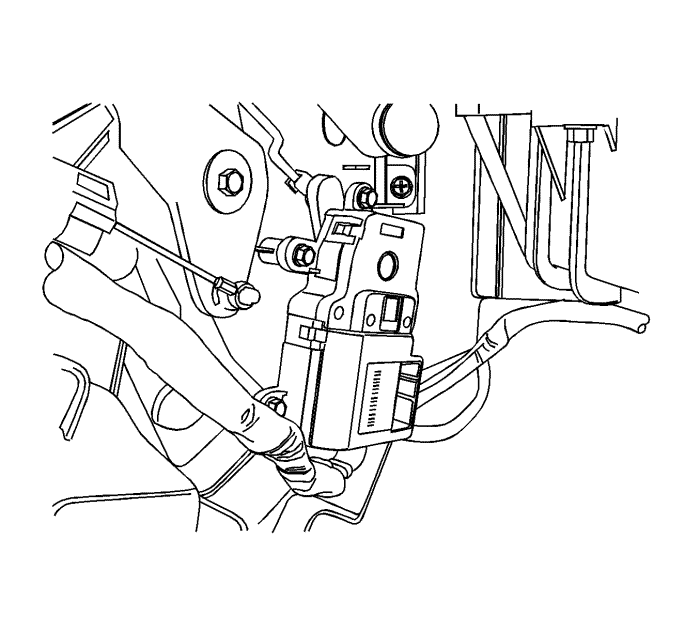

Sustitución del actuador de la válvula de temperatura
Procedimiento de desmontaje
Advertencia: Consulte Advertencia sobre la desconexión de la batería en la sección Prólogo.

Nota: Se ilustra un modelo con volante a la izquierda. El modelo con volante a la derecha es similar.
- Desconecte el cable de batería negativo. Consultar Desconexión y conexión del cable de batería negativo .
- Desmontar el compartimento portaobjetos del panel de instrumentos. Consultar Sustitución del compartimento del panel de instrumentos : Carrocería larga → Carrocería corta .
- Desconecte el conector eléctrico.
- Desmonte la varilla de accionamiento sacándola de la palanca con unos alicates de punta fina.
- Desmonte la palanca del motor de su eje tirando de ella hacia fuera.
- Desmonte los tornillos de fijación del motor.
- Desmonte el motor de la trampilla de temperatura.
Procedimiento de montaje
Nota: Se ilustra un modelo con volante a la izquierda. El modelo con volante a la derecha es similar.
- Monte el motor de la trampilla de temperatura.
- Monte y apriete los tornillos de fijación.
- Monte a presión la palanca en el eje del motor.
- Monte la varilla de accionamiento en la palanca.
- Enchufe el conector eléctrico.
- Montar el compartimento portaobjetos en el panel de instrumentos. Consultar Sustitución del compartimento del panel de instrumentos : Carrocería larga → Carrocería corta .
- Conecte el cable negativo de la batería. Consultar Desconexión y conexión del cable de batería negativo .
| © Copyright Chevrolet Europe. All rights reserved |